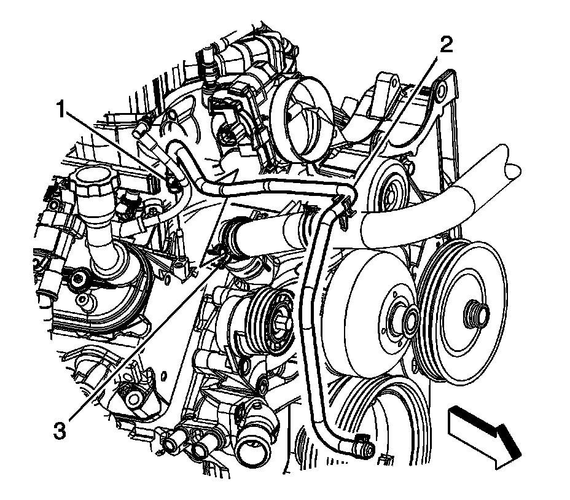
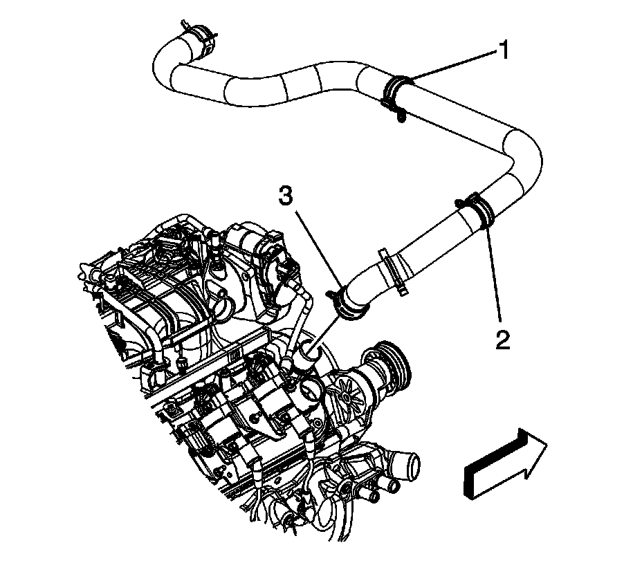
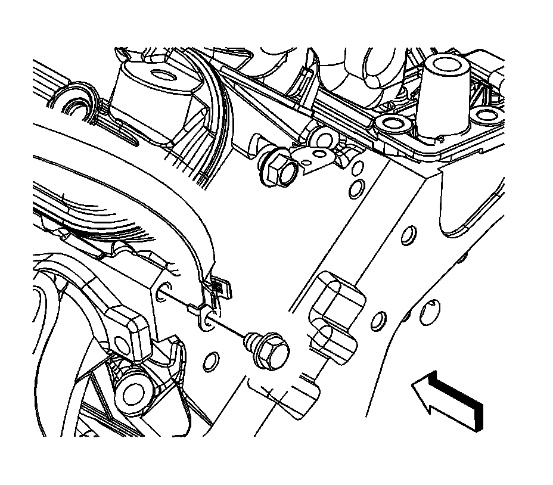
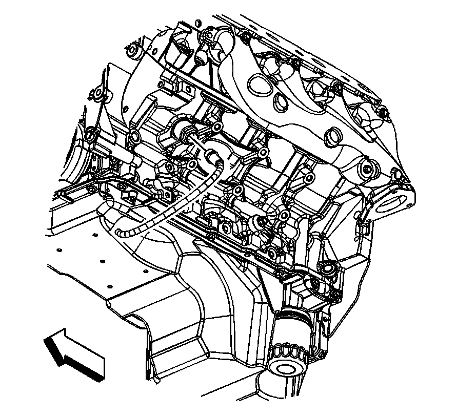
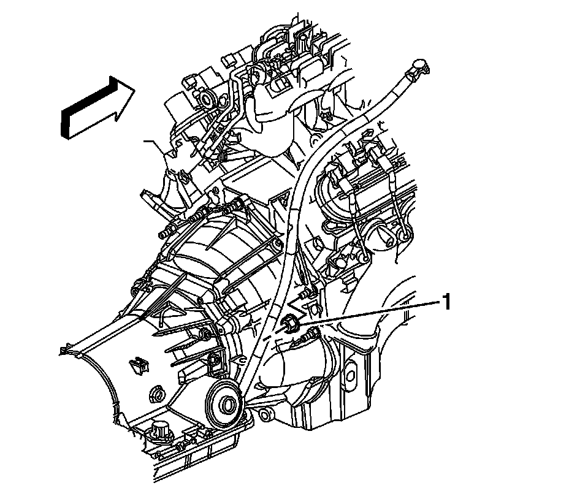
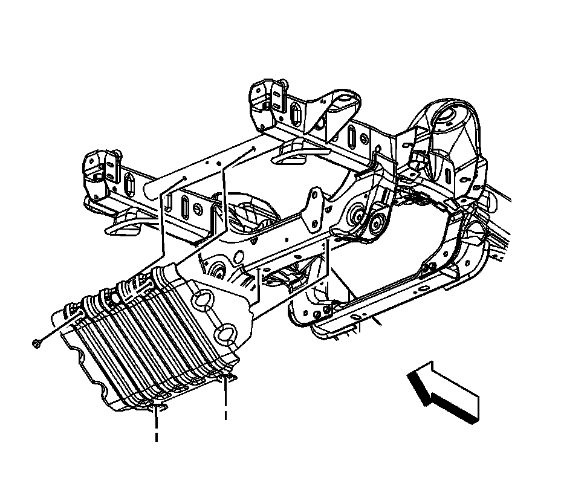
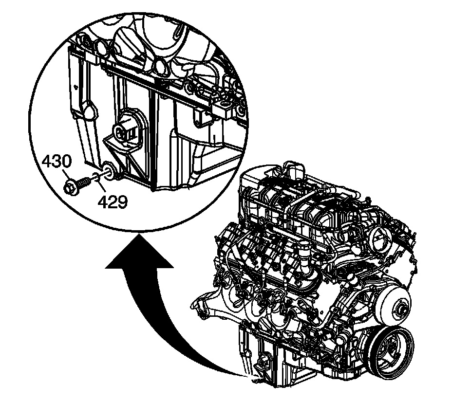
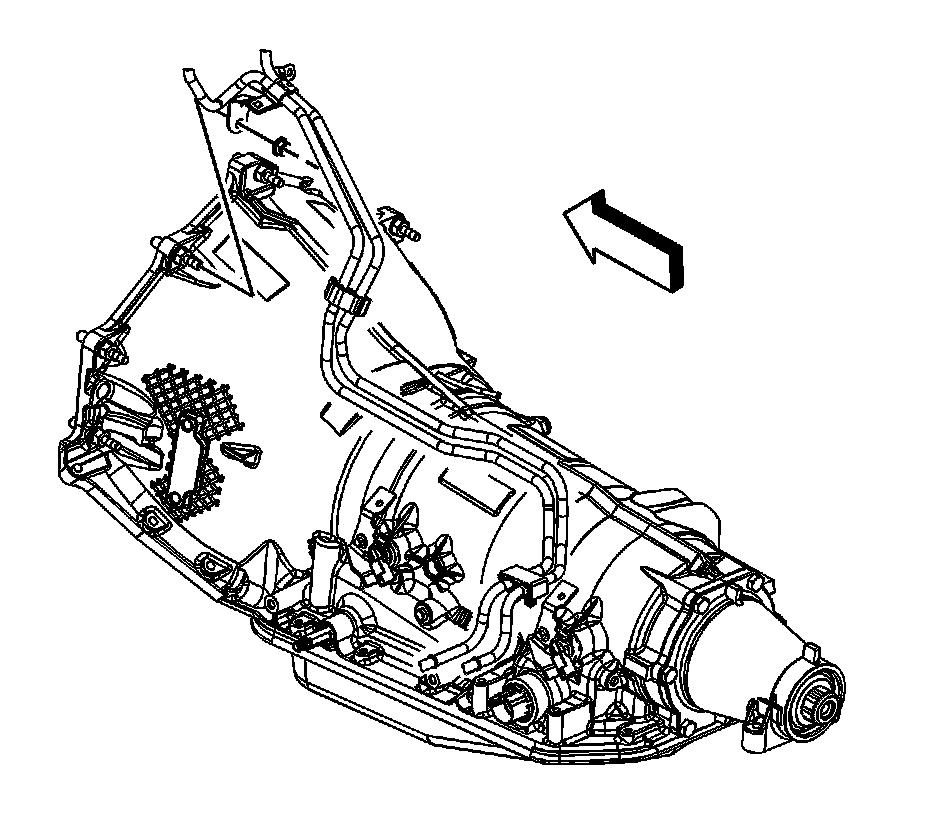

Removal and Replacement
Engine Replacement
Tools Required
^ J 21366 Converter Holding Strap
^ J 41798 Engine Lifting Brackets
Removal Procedure
1. Open the hood.
2. Remove the ground strap nut at the hood stud.
3. Remove the ground strap from the stud.
4. Assemble 2 sets of the following: an M6 bolt, 2 each 19.05 mm (0.75 in) flat washers and an M6 nut.
5. Release the retainer securing the hood strut rod to the hood strut bracket stud.
6. Remove the hood strut rod (1) from the stud.
7. Remove the air inlet grille end caps (2), lift the end cap up in order to disengage the retainers. (left side shown, right side similar).
8. Have an assistant support the hood.
9. Remove the hood hinge bolts (3) and set aside.
Important: There is a positive stop which limits the hood from being opened too far.
10. Raise the hood until the service position notch (1) in the upper hinge is reached.
11. Install the 2 sets of the M6 bolts to both the left and right side service notches and tighten finger tight.
Notice: Refer to Fastener Notice.
12. Lower the hood until the bolts rest against the lower hinge, tighten the bolts to secure the hood.
Tighten the bolts to 20 N.m (15 lb ft).
13. The hood is now set in the service position.
14. Remove the hood latch.
15. Remove the front end upper tie bar.
16. Remove the intake manifold.

17. Remove the radiator vent inlet hose (2) from the radiator inlet hose clip (3).
18. Reposition the radiator vent inlet hose clamp (1) at the air bleed pipe.
19. Remove the radiator vent inlet hose (2) from the air bleed pipe and reposition.

20. Reposition the radiator inlet hose clamp (3) at the water pump.
21. Remove the radiator inlet hose from the water pump.

22. Reposition the radiator outlet hose clamp at the water pump.
23. Remove the radiator outlet hose from the water pump.
24. Remove the heater hoses. Refer to Heater Inlet Hose Replacement and Heater Outlet Hose Replacement.

25. Disconnect the engine harness electrical connector (1) from the oil pressure sensor.
26. Disconnect the engine harness electrical connector (2) from the lifter oil manifold.

27. Remove the engine ground strap bolt from the rear of the left cylinder head and cowl and reposition.

28. Remove the negative battery cable stud (1) from the right cylinder head.
29. Remove the negative battery cable terminal (2) and the engine harness ground (3) from the right cylinder head.
30. Raise and support the vehicle. Refer to Lifting and Jacking the Vehicle.
31. Remove the engine harness clip (1) from the ground stud.
32. Remove the engine harness ground stud (2) from the engine block.
33. Remove the engine harness grounds (3) from the engine block.
34. Disconnect the engine harness electrical connector (4) from the knock sensor.

35. Remove the transmission oil cooler line clip bolt from the oil pan, if equipped.

36. Disconnect the engine harness electrical connector (1) from the camshaft position (CMP) sensor wire harness.
37. Remove the battery cable channel bolt (2).
38. Slide the channel pin (3) out of the oil pan tab.
39. Disconnect the engine harness electrical connector (1) from the A/C refrigerant pressure sensor.
40. Remove the starter motor.

41. Disconnect the engine harness electrical connector (1) from the crankshaft position (CKP) sensor.
42. Disconnect the engine harness electrical connector (2) from the knock sensor.
43. Disconnect the engine harness electrical connector (4) from the oil level sensor.
44. Remove the engine harness clip (3) from the transmission oil cooler line bracket.

45. Disconnect the coolant heater cord from the coolant heater, if equipped.
46. Lower the vehicle.
47. Remove the rear power steering pump-to-engine block bolt (1500 series shown, 2500 series similar).
48. Remove the generator bracket bolts.
49. Position the generator bracket (with power steering pump) aside.
50. Remove the ignition coil, as required for the proper fit of the J 41798 before lifting the engine.

51. Remove the transmission oil level indicator tube nut (1).
52. Remove the transmission oil level indicator tube.
Notice: Refer to Fastener Notice.
53. Install the J 41798 to the cylinder heads.
^ Tighten the M8 engine lift bracket bolts to 25 N.m (18 lb ft).
^ Tighten the M10 engine lift bracket bolts to 50 N.m (37 lb ft).
54. For 1500 series vehicles with a 4.8L engine, remove the left and right engine mount to frame bolts (1).
55. For 1500 series vehicles with a 5.3L, 6.0L, or 6.2L engines, remove the left and right engine mount to frame bolts (1).
56. For 2500 series vehicles with a 5.3L, 6.0L, or 6.2L engines, remove the left and right engine mount to engine mount bracket bolts (1).
57. Raise the vehicle.

58. Remove the engine shield bolts and shield.

59. For 1500 series vehicles, remove the oil pan skid plate bolts and plate, if equipped.

60. For 2500 series vehicles, remove the oil pan skid plate bolts and plate, if equipped.

61. Place a suitable drain pan under the oil pan drain plug.
62. Remove the oil pan drain plug (430).
63. Allow the oil to drain completely.
64. Reinstall and tighten the oil pan drain plug.
Tighten the drain plug to 25 N.m (18 lb ft).
65. Remove the catalytic converter. Refer to one of the following procedures:
^ Catalytic Converter Replacement (1500 Series) for 1500 series
^ Catalytic Converter Replacement-Left Side (2500 Series) for the 2500 Series
^ Catalytic Converter Replacement-Right Side (2500 Series) for the 2500 Series
66. Remove the flywheel to torque converter bolts.

67. Remove the fuel/evaporative emission (EVAP) pipe bracket nut from the transmission stud (typical installation shown).
68. Remove the fuel/EVAP pipe bracket from the stud. Reposition the bracket out of the way.
69. For the 4L80-E automatic transmission, remove the transfer case vent hose bracket (1) nut from the stud, if equipped.
70. For the 4L60-E/4L70-E/6L80-E automatic transmission, remove the transfer case vent hose bracket (2) nut from the stud, if equipped.
71. Reposition the transfer case vent hose bracket and hose out of the way, if equipped.
72. If equipped with the 4L60-E/4L70-E automatic transmission, remove the transmission bolts/studs.
73. If equipped with the 4L80-E automatic transmission, remove the transmission bolts/studs.
74. If equipped with the 6L80-E automatic transmission, remove the transmission bolts/studs.
75. Lower the vehicle.
76. Position and install an engine hoist to the J 41798.
77. Install a floor jack under the transmission for support.
78. Remove the engine from the vehicle.
79. Install the J 21366 to the transmission in order to hold the torque converter.
80. Position and install the engine onto an engine stand.
81. Remove the engine hoist. from the J 41798.
82. Remove the J 41798 from the engine.
Installation Procedure
1. Install the J 41798 to the engine.
^ Tighten the M8 engine lift bracket bolts to 25 N.m (18 lb ft).
^ Tighten the M10 engine lift bracket bolts to 50 N.m (37 lb ft).
2. Position and install the engine hoist to the J 41798.
3. Remove the engine from the engine stand.
4. Remove the J 21366 from the transmission.
5. Install the engine to the vehicle.
6. Align and install the engine to the transmission. Raise or lower the transmission as required using the floor jack.
7. Once aligned and mated together completely lower and remove the engine hoist.
8. For 2500 series vehicles with a 5.3L, 6.0L, or 6.2L engine, install the left and right engine mount to engine mount bracket bolts (1).
Tighten the bolts to 65 N.m (48 lb ft) starting with the middle bolt then either side bolt.
9. For 1500 series vehicles with a 5.3L, 6.0L, or 6.2L engine, install the left and right engine mount to frame bolts (1).
Tighten the bolts to 65 N.m (48 lb ft) starting with the middle bolt then either side bolt.
10. For 1500 series vehicles with a 4.8L engine, install the left and right engine mount to frame bolts (1).
Tighten the bolts to 65 N.m (48 lb ft) starting with the middle bolt then either side bolt.
11. Remove the floor jack from under the transmission.
12. Raise the vehicle.
13. If equipped with the 6L80-E automatic transmission, install the transmission bolts/studs.
Tighten the bolts/studs to 50 N.m (37 lb ft).
14. If equipped with the 4L80-E automatic transmission, install the transmission bolts/studs.
Tighten the bolts/studs to 50 N.m (37 lb ft).
15. If equipped with the 4L60-E/4L70-E automatic transmission, install the transmission bolts/studs.
Tighten the bolts/studs to 50 N.m (37 lb ft).
16. Position the transfer case vent hose bracket and hose and install the bracket to the stud, if equipped.
17. For the 4L60-E/4L70-E/6L80-E automatic transmission, install the transfer case vent hose bracket (2) nut to the stud, if equipped.
Tighten the nut to 20 N.m (15 lb ft).
18. For the 4L80-E automatic transmission, install the transfer case vent hose bracket (1) nut to the stud, if equipped.
Tighten the nut to 20 N.m (15 lb ft).
19. Position the fuel/EVAP pipe bracket and install the bracket to the stud. (typical installation shown).
20. Install the fuel/EVAP pipe bracket nut to the transmission stud
Tighten the nut to 20 N.m (15 lb ft).
21. Align the torque converter bolt holes to the flywheel bolt holes.
22. Install the flywheel to torque converter bolts.
^ For the 4L60-E/4L70-E/6L80-E automatic transmission, tighten the bolts to 63 N.m (47 lb ft).
^ For the 4L80-E automatic transmission, tighten the bolts to 60 N.m (44 lb ft).
23. Install the catalytic converter. Refer to one of the following procedures:
^ Catalytic Converter Replacement (1500 Series) for 1500 Series
^ Catalytic Converter Replacement - Left Side (2500 Series) for the 2500 series
^ Catalytic Converter Replacement - Right Side (2500 Series) for the 2500 series
24. Lower the vehicle.
25. Remove the J 41798 from the cylinder heads.
26. Install the ignition coil(s) and spark plug wire(s), as required.
27. Install the transmission oil level indicator tube.
28. Install the transmission oil level indicator tube nut (1).
Tighten the nut to 18 N.m (13 lb ft).
29. Position the generator bracket (with power steering pump) to the engine.
30. Install the generator bracket bolts.
Tighten the bolts to 50 N.m (37 lb ft).
31. Install the rear power steering pump-to-engine block bolt (1500 series shown, 2500 series similar).
Tighten the bolt to 50 N.m (37 lb ft).
32. Raise the vehicle.
33. Connect the coolant heater cord to the coolant heater, if equipped.
34. Connect the engine harness electrical connector (1) to the CKP sensor.
35. Connect the engine harness electrical connector (2) to the knock sensor.
36. Connect the engine harness electrical connector (4) to the oil level sensor.
37. Install the engine harness clip (3) to the transmission oil cooler line bracket.
38 Install the starter motor.
39. Connect the engine harness electrical connector (1) to the A/C refrigerant pressure sensor.
40. Slide the channel pin (3) into the oil pan tab.
41. Install the battery cable channel bolt (2).
Tighten the bolt to 12 N.m (106 lb in).
42. Connect the engine harness electrical connector (1) to the CMP sensor wire harness.
43. Position the transmission oil cooler line clip to the oil pan and install the bolt, if equipped.
Tighten the bolt to 9 N.m (80 lb in).
44. Connect the engine harness electrical connector (4) to the knock sensor.
45. Position the engine harness grounds (3) to the engine block.
46. Install the engine harness ground stud (2) to the engine block.
Tighten the stud to 16 N.m (12 lb ft).
47. Install the engine harness clip (1) to the ground stud.
48. Lower the vehicle.
49. Position the negative battery cable terminal (2) and the engine harness ground (3) to the right cylinder head.
50. Install the negative battery cable stud (1) to the right cylinder head.
Tighten the stud to 25 N.m (18 lb ft).
51. Position the engine ground strap to the cylinder head and cowl.
52. Install the engine ground strap bolt to the rear of the left cylinder head and cowl.
Tighten the bolt to 16 N.m (12 lb ft).
53. Connect the engine harness electrical connector (1) to the oil pressure sensor.
54. Connect the engine harness electrical connector (2) to the lifter oil manifold.
55. Install the heater hoses. Refer to Heater Inlet Hose Replacement and Heater Outlet Hose Replacement.
56. Install the radiator outlet hose to the water pump.
57. Position the radiator outlet hose clamp at the water pump.
58. Install the radiator inlet hose to the water pump.
59. Position the radiator inlet hose clamp (3) at the water pump.
60. Position and install the radiator vent inlet hose (2) to the air bleed pipe.
61. Position the radiator vent inlet hose clamp (1) at the air bleed pipe.
62. Install the radiator vent inlet hose (2) to the radiator inlet hose clip (3).
63. Position the generator battery jumper to the engine.
64. Install the intake manifold.
65. For 2500 series vehicles, install the oil pan skid plate and bolts, if equipped.
Tighten the bolts to 28 N.m (21 lb ft).
66. For 1500 series vehicles, install the oil pan skid plate and bolts, if equipped.
Tighten the bolts to 28 N.m (21 lb ft).
67. Install the engine shield and bolts.
Tighten the bolts to 20 N.m (15 lb ft).
68. Lower the vehicle.
69. Install the front end upper tie bar.
70. Install the hood latch.
Important: There is a positive stop which limits the hood from being opened too far.
71. With the aid of the assistant raise the hood slightly until the hood hinge bolts can be removed from the service position notch (1).
72. With the aid of an assistant lower the hood and install the hood hinge bolts (3) to the hood hinges.
Tighten the bolts to 25 N.m (18 lb ft).
73. Install the hood strut rod (1) to the hood strut bracket stud.
74. Install the air inlet grille end caps (2), push down the end cap in order to engage the retainers. (left side shown, right side similar).
75. Install the ground strap to the hood stud.
76. Install the ground strap nut at the hood stud.
Tighten the nut to 9 N.m (80 lb in).
77. Prelube the engine.
78. Perform the CKP system variation learn procedure. Refer to Crankshaft Position System Variation Learn.
Important: After an overhaul the engine should be tested. Use the following procedure after the engine is installed in the vehicle.
^ Disable the ignition system.
^ Crank the engine several times. Listen for any unusual noises or evidence that parts are binding.
^ Enable the ignition system.
^ Start the engine and listen for unusual noises.
^ Check the vehicle oil pressure gauge or light and confirm that the engine has acceptable oil pressure.
^ Run the engine speed at about 1,000 RPM until the engine has reached normal operating temperature.
^ Listen for sticking lifters or other unusual noises.
^ Inspect for fuel, oil and/or coolant leaks while the engine is running.
^ Perform a final inspection for the proper oil and coolant levels.
79. Close the hood.